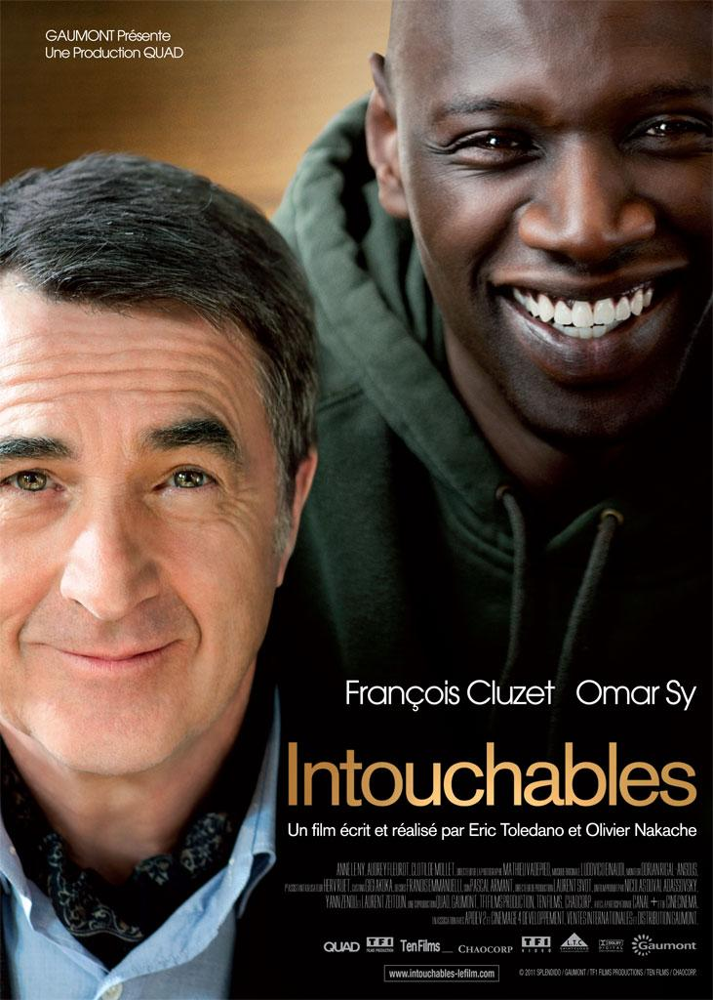

Intocable
Philippe, un aristócrata millonario que se ha quedado tetrapléjico a causa de un accidente de parapente, contrata como cuidador a domicilio a Driss, un inmigrante de un barrio marginal recién salido de la cárcel. Aunque, a primera vista, no parece la persona más indicada, los dos acaban logrando que convivan Vivaldi y Earth Wind and Fire, la elocuencia y la hilaridad, los trajes de etiqueta y el chándal. Dos mundos enfrentados que, poco a poco, congenian hasta forjar una amistad tan disparatada, divertida y sólida como inesperada, una relación única en su especie de la que saltan chispas.
Data film
- Released: 2011
- Director: Olivier Nakache, Eric Toledano
- Released: François Cluzet, Omar Sy, Anne Le Ny, Audrey Fleurot, Clotilde Mollet, Joséphine de Meaux, Alba Gaia Bellugi, Cyril Mendy, Christian Ameri, Marie-Laure Descoureaux, Gregoire Oestermann
Related films